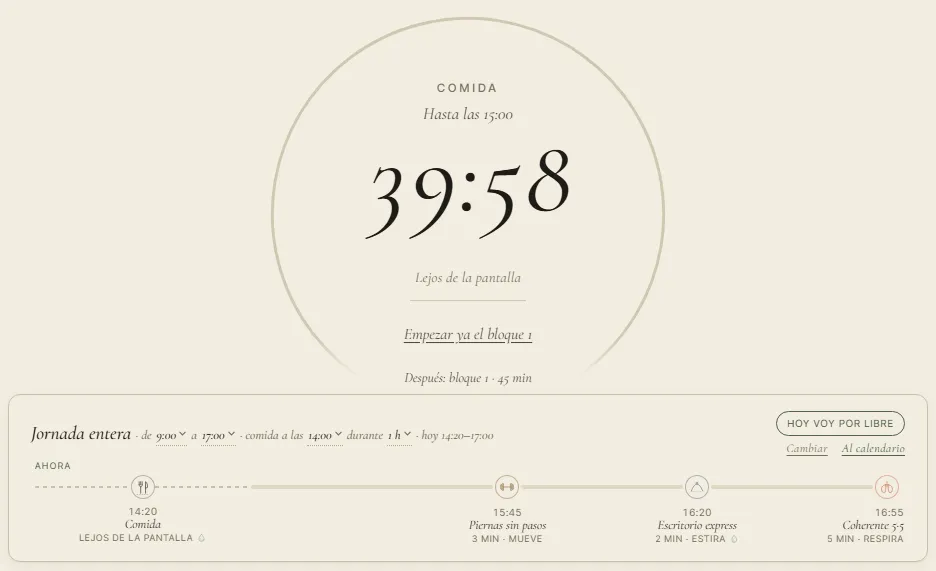
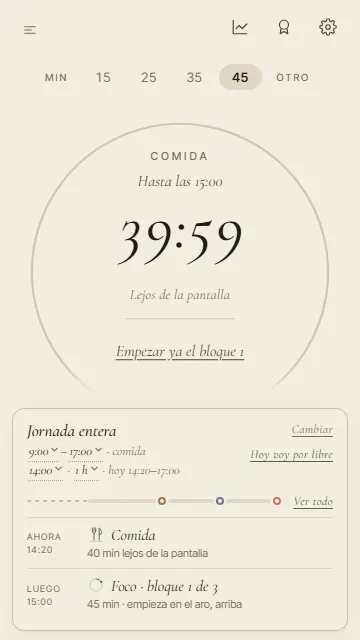
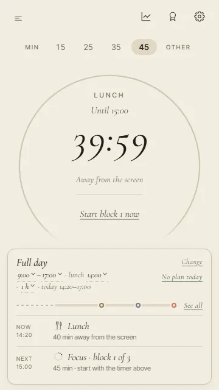
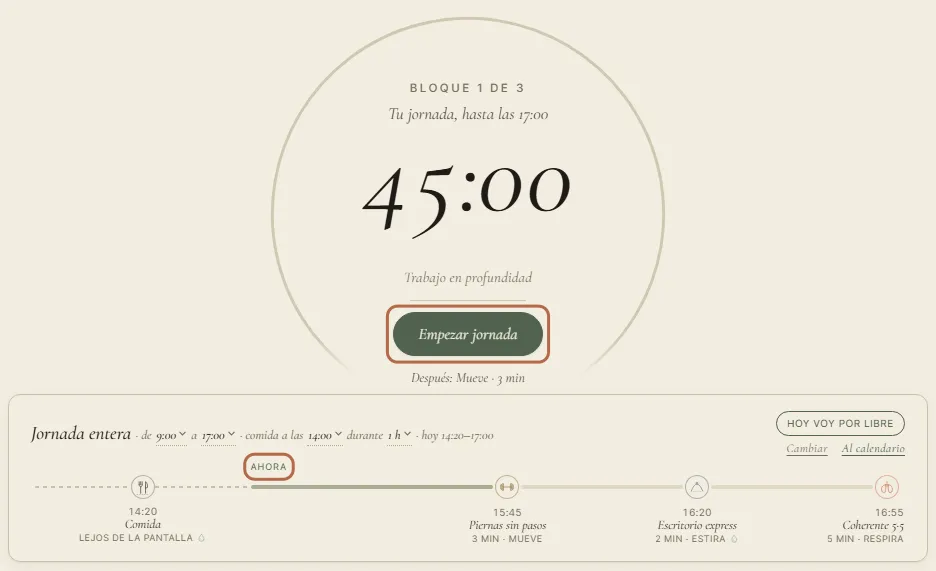
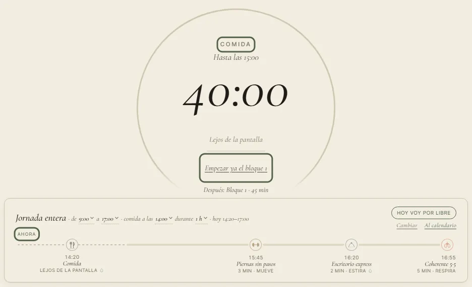
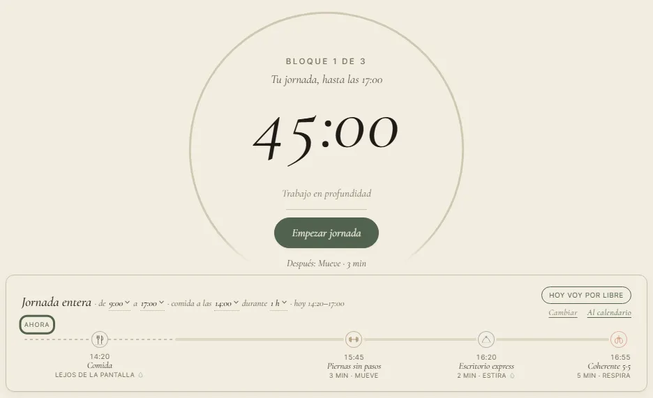

La comida, a las 14:20
Jornada de 9:00 a 17:00, con la comida de 14:00 a 15:00. Eliges la jornada (o vuelves a PACE) a las 14:20, en plena comida. Solo el aro y la línea del día, en la app de verdad. Lo marcado es lo que importa.
Montada · Ez eligió la A (22 nov.)
La A, en la app
En la rama claude/caza-web-22nov-829743, con tests/comida-en-el-aro.spec.js. Igual al elegir la jornada a las 14:20, al volver con el día servido y tras «Ahora no». En el móvil, la tarjeta dice también «Ahora · 14:20 · Comida» y «Luego · 15:00 · el bloque 1».



Hoy

- El botón verde, «Empezar jornada», empieza un bloque de 45 min ya: se come la comida y la quita del día.
- «AHORA» está en el bloque de las 15:00, no en la comida, que es lo que toca.
Recomendada
A · La comida, en el aro

- El aro dice «Comida · Hasta las 15:00» y cuenta lo que queda de comida.
- No hay botón verde: «Empezar ya el bloque 1» queda como enlace, por si ya has comido.
- «AHORA» va en la comida.
B · Solo «AHORA»

- «AHORA» va en la comida.
- El aro se queda como hoy: el botón verde sigue invitando a empezar el bloque y a comerse la comida.